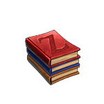

Получено: файл; исходный URL. Без перекодирования; при замене домена идентичность оригиналу не проверена, авторство не установлено. Страница: источник.
Книги
ВКонтакте; данные из ZOMBIA; 06 Апреля 2012, 20:37- Тип
- нет данных
- Покупка
- нет данных
- Продажа
- нет данных
- Как получить
- Собрать школьную коллекцию: [изображение: Школа] Сделать в Школе : 01 = 05 +05 (ВКонтакте, ZOMBIA; требует сверки).
- Применение
- нет данных
- Особенности
- нет данных
- Версия и дата
- ВКонтакте; данные из ZOMBIA; 06 Апреля 2012, 20:37
Данные по источнику · ВКонтакте, ZOMBIA · 06 Апреля 2012, 20:37; дата редакции не установлена
Предварительно: Данные одной исторической фанатской страницы; цифры и подписи изображений требуют сверки. Описание и условия сохранены по колонкам без додумывания.. Требуется сверка.
- Описание материала
- Стоимость: 1000 монет
- Нужен в строительстве
- нет текстовых данных; возможны неподписанные изображения
- Где достать
- Собрать школьную коллекцию: [изображение: Школа] Сделать в Школе : 01 = 05 +05
- Нужен в создании
- нет текстовых данных; возможны неподписанные изображения

Данные по источнику · браузерная Зомби Ферма / Зомби Мания; платформа требует проверки · дата URL не гарантирует дату редакции
Предварительно: Индивидуальная страница прочитана автоматически, подписи значков могут содержать ошибки; даты редакции и независимость от ЗомбиСити не установлены.. Требуется сверка.
- Основной блок страницы и подписи изображений
- Материал [иллюстрация: Книги] Книги Цена покупки: 1 [иллюстрация: Зомбаксы] Цена продажи: 1000 [иллюстрация: Монеты] Продать или купить Книги можно в Обменке Зомби Фермы Книги - необычный материал игры Зомби Ферма, появившийся во время Школьного обновления в 2012 году вместе с постройкой Школа. Книги участвуют в строительстве, а так же нужны для создания проездного в фургоне. Книги дают за обмен Школьной коллекции: Школьная [иллюстрация: Школьная Коллекция] Материал Книги создается в специальной постройке: Книги [иллюстрация: Книги] = 5 Газеты [иллюстрация: Газеты] + 5 Шестерня [иллюстрация: Шестерня] [иллюстрация: Стрелка] Школа [иллюстрация: Школа] Книги [иллюстрация: Книги] = 3 Время [иллюстрация: Время] + 25 Лук [иллюстрация: Лук] [иллюстрация: Стрелка] Библиотека [иллюстрация: Библиотека] Книги участвуют в создании: Теорема [иллюстрация: Теорема] Жетоны на 100 поездок [иллюстрация: Жетоны на 100 поездок] Книги участвуют в строительстве: Семейное гнездо [иллюстрация: Семейное гнездо] Спуск в Нижнее днищ [иллюстрация: Спуск в Нижнее днище] Назад в пещеры ЗУ [иллюстрация: Назад в пещеры ЗУ] Глобус [иллюстрация: Глобус] Дом знаний [иллюстрация: Дом знаний] Перевал №1 [иллюстрация: Перевал №1 ] Парусник [иллюстрация: Парусник] Опер. театр за голоса [иллюстрация: Оперный театр за голоса] Опер. театр за зомбаксы [иллюстрация: Оперный театр за зомбаксы]
Данные по источнику · браузерная игра, платформа не указана · 10.04.2015
Предварительно: Прочитана отдельная статья; данные исторические, независимость от других справочников не установлена.. Требуется сверка.
- Получение
- Покупка за 1 зомбакс; Школьная коллекция; награды заданий «У царя», «Марафон 18», «Выносливость».
- Продажа и применение
- 1000 монет; строительство и создание проездного в фургоне. Источник пишет о появлении при школьном обновлении 2012 года.


Связанные сущности
- Школа — упоминается в стадиях или производстве Школы